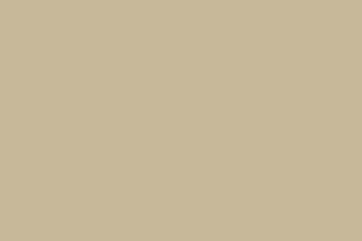
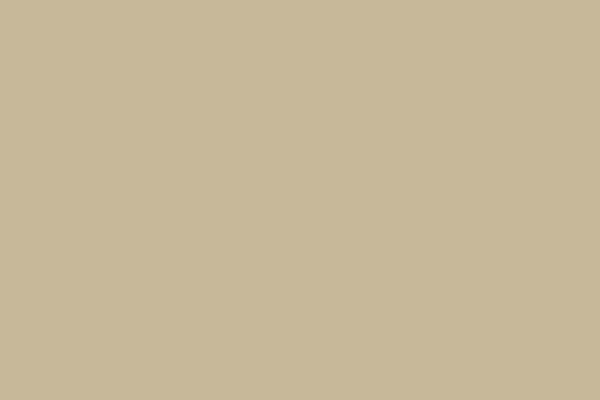
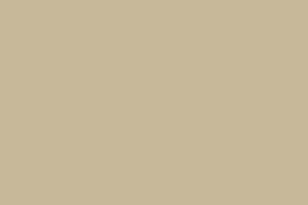
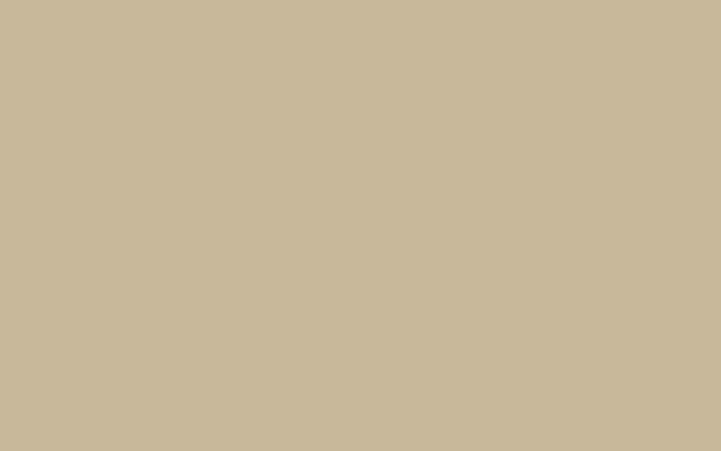

Gallery
Explore the beauty and charm of Devran Wada




Authentic Heritage Farmhouse Near Sinhagad Fort
Perfect Location for Pre-Wedding Shoots, Ad Films, Reels & Creative Productions
Book Your ShootNestled near the historic Sinhagad Fort, Devran Wada is an authentic old Maharashtrian farmhouse that captures the essence of traditional Puneri architecture and rural charm. Our heritage property features classic wooden pillars, intricately carved doors, a traditional chowk courtyard, and rustic surroundings that provide the perfect backdrop for your creative projects.
Whether you're planning a pre-wedding photoshoot, filming an advertisement, creating engaging reels, or producing a film, our wada offers diverse shooting locations within a single property. The authentic architecture and natural beauty create stunning visuals that bring your creative vision to life.
Learn More
Authentic heritage architecture ideal for pre-wedding shoots, ad films, and creative productions
Original wooden pillars, carved doors, and traditional chowk courtyard
Located near Sinhagad Fort with beautiful rural surroundings
Multiple shooting locations within the property for diverse scenes
Explore the beauty and charm of Devran Wada



Contact us today to reserve Devran Wada for your next creative project
Get in Touch